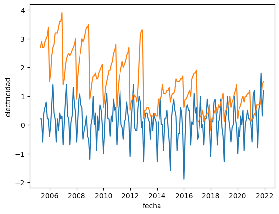
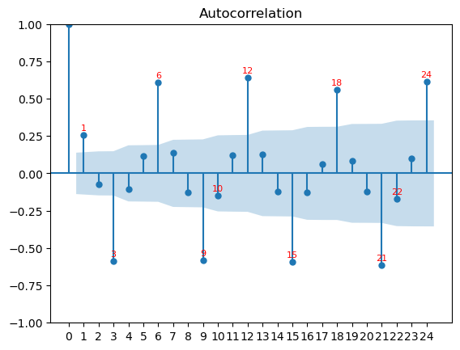

import requests
import pandas as pd
import seaborn as sns
url = "https://servicios.ine.es/wstempus/js/ES/DATOS_SERIE/IPC206449?nult=200"respuesta = requests.get(url)
print(respuesta.status_code)
print(respuesta.json())200
{'COD': 'IPC206449', 'Nombre': 'Nacional. Índice general. Variación mensual. ', 'FK_Unidad': 135, 'FK_Escala': 1, 'Data': [{'Fecha': 1114898400000, 'FK_TipoDato': 1, 'FK_Periodo': 5, 'Anyo': 2005, 'Valor': 0.2, 'Secreto': False}, {'Fecha': 1117576800000, 'FK_TipoDato': 1, 'FK_Periodo': 6, 'Anyo': 2005, 'Valor': 0.2, 'Secreto': False}, {'Fecha': 1120168800000, 'FK_TipoDato': 1, 'FK_Periodo': 7, 'Anyo': 2005, 'Valor': -0.6, 'Secreto': False}, {'Fecha': 1122847200000, 'FK_TipoDato': 1, 'FK_Periodo': 8, 'Anyo': 2005, 'Valor': 0.4, 'Secreto': False}, {'Fecha': 1125525600000, 'FK_TipoDato': 1, 'FK_Periodo': 9, 'Anyo': 2005, 'Valor': 0.6, 'Secreto': False}, {'Fecha': 1128117600000, 'FK_TipoDato': 1, 'FK_Periodo': 10, 'Anyo': 2005, 'Valor': 0.8, 'Secreto': False}, {'Fecha': 1130799600000, 'FK_TipoDato': 1, 'FK_Periodo': 11, 'Anyo': 2005, 'Valor': 0.2, 'Secreto': False}, {'Fecha': 1133391600000, 'FK_TipoDato': 1, 'FK_Periodo': 12, 'Anyo': 2005, 'Valor': 0.2, 'Secreto': False}, {'Fecha': 1136070000000, 'FK_TipoDato': 1, 'FK_Periodo': 1, 'Anyo': 2006, 'Valor': -0.4, 'Secreto': False}, {'Fecha': 1138748400000, 'FK_TipoDato': 1, 'FK_Periodo': 2, 'Anyo': 2006, 'Valor': 0.0, 'Secreto': False}, {'Fecha': 1141167600000, 'FK_TipoDato': 1, 'FK_Periodo': 3, 'Anyo': 2006, 'Valor': 0.7, 'Secreto': False}, {'Fecha': 1143842400000, 'FK_TipoDato': 1, 'FK_Periodo': 4, 'Anyo': 2006, 'Valor': 1.4, 'Secreto': False}, {'Fecha': 1146434400000, 'FK_TipoDato': 1, 'FK_Periodo': 5, 'Anyo': 2006, 'Valor': 0.4, 'Secreto': False}, {'Fecha': 1149112800000, 'FK_TipoDato': 1, 'FK_Periodo': 6, 'Anyo': 2006, 'Valor': 0.2, 'Secreto': False}, {'Fecha': 1151704800000, 'FK_TipoDato': 1, 'FK_Periodo': 7, 'Anyo': 2006, 'Valor': -0.6, 'Secreto': False}, {'Fecha': 1154383200000, 'FK_TipoDato': 1, 'FK_Periodo': 8, 'Anyo': 2006, 'Valor': 0.2, 'Secreto': False}, {'Fecha': 1157061600000, 'FK_TipoDato': 1, 'FK_Periodo': 9, 'Anyo': 2006, 'Valor': -0.2, 'Secreto': False}, {'Fecha': 1159653600000, 'FK_TipoDato': 1, 'FK_Periodo': 10, 'Anyo': 2006, 'Valor': 0.4, 'Secreto': False}, {'Fecha': 1162335600000, 'FK_TipoDato': 1, 'FK_Periodo': 11, 'Anyo': 2006, 'Valor': 0.2, 'Secreto': False}, {'Fecha': 1164927600000, 'FK_TipoDato': 1, 'FK_Periodo': 12, 'Anyo': 2006, 'Valor': 0.3, 'Secreto': False}, {'Fecha': 1167606000000, 'FK_TipoDato': 1, 'FK_Periodo': 1, 'Anyo': 2007, 'Valor': -0.7, 'Secreto': False}, {'Fecha': 1170284400000, 'FK_TipoDato': 1, 'FK_Periodo': 2, 'Anyo': 2007, 'Valor': 0.1, 'Secreto': False}, {'Fecha': 1172703600000, 'FK_TipoDato': 1, 'FK_Periodo': 3, 'Anyo': 2007, 'Valor': 0.8, 'Secreto': False}, {'Fecha': 1175378400000, 'FK_TipoDato': 1, 'FK_Periodo': 4, 'Anyo': 2007, 'Valor': 1.4, 'Secreto': False}, {'Fecha': 1177970400000, 'FK_TipoDato': 1, 'FK_Periodo': 5, 'Anyo': 2007, 'Valor': 0.3, 'Secreto': False}, {'Fecha': 1180648800000, 'FK_TipoDato': 1, 'FK_Periodo': 6, 'Anyo': 2007, 'Valor': 0.2, 'Secreto': False}, {'Fecha': 1183240800000, 'FK_TipoDato': 1, 'FK_Periodo': 7, 'Anyo': 2007, 'Valor': -0.7, 'Secreto': False}, {'Fecha': 1185919200000, 'FK_TipoDato': 1, 'FK_Periodo': 8, 'Anyo': 2007, 'Valor': 0.1, 'Secreto': False}, {'Fecha': 1188597600000, 'FK_TipoDato': 1, 'FK_Periodo': 9, 'Anyo': 2007, 'Valor': 0.3, 'Secreto': False}, {'Fecha': 1191189600000, 'FK_TipoDato': 1, 'FK_Periodo': 10, 'Anyo': 2007, 'Valor': 1.3, 'Secreto': False}, {'Fecha': 1193871600000, 'FK_TipoDato': 1, 'FK_Periodo': 11, 'Anyo': 2007, 'Valor': 0.7, 'Secreto': False}, {'Fecha': 1196463600000, 'FK_TipoDato': 1, 'FK_Periodo': 12, 'Anyo': 2007, 'Valor': 0.4, 'Secreto': False}, {'Fecha': 1199142000000, 'FK_TipoDato': 1, 'FK_Periodo': 1, 'Anyo': 2008, 'Valor': -0.6, 'Secreto': False}, {'Fecha': 1201820400000, 'FK_TipoDato': 1, 'FK_Periodo': 2, 'Anyo': 2008, 'Valor': 0.2, 'Secreto': False}, {'Fecha': 1204326000000, 'FK_TipoDato': 1, 'FK_Periodo': 3, 'Anyo': 2008, 'Valor': 0.9, 'Secreto': False}, {'Fecha': 1207000800000, 'FK_TipoDato': 1, 'FK_Periodo': 4, 'Anyo': 2008, 'Valor': 1.1, 'Secreto': False}, {'Fecha': 1209592800000, 'FK_TipoDato': 1, 'FK_Periodo': 5, 'Anyo': 2008, 'Valor': 0.7, 'Secreto': False}, {'Fecha': 1212271200000, 'FK_TipoDato': 1, 'FK_Periodo': 6, 'Anyo': 2008, 'Valor': 0.6, 'Secreto': False}, {'Fecha': 1214863200000, 'FK_TipoDato': 1, 'FK_Periodo': 7, 'Anyo': 2008, 'Valor': -0.5, 'Secreto': False}, {'Fecha': 1217541600000, 'FK_TipoDato': 1, 'FK_Periodo': 8, 'Anyo': 2008, 'Valor': -0.2, 'Secreto': False}, {'Fecha': 1220220000000, 'FK_TipoDato': 1, 'FK_Periodo': 9, 'Anyo': 2008, 'Valor': 0.0, 'Secreto': False}, {'Fecha': 1222812000000, 'FK_TipoDato': 1, 'FK_Periodo': 10, 'Anyo': 2008, 'Valor': 0.3, 'Secreto': False}, {'Fecha': 1225494000000, 'FK_TipoDato': 1, 'FK_Periodo': 11, 'Anyo': 2008, 'Valor': -0.4, 'Secreto': False}, {'Fecha': 1228086000000, 'FK_TipoDato': 1, 'FK_Periodo': 12, 'Anyo': 2008, 'Valor': -0.5, 'Secreto': False}, {'Fecha': 1230764400000, 'FK_TipoDato': 1, 'FK_Periodo': 1, 'Anyo': 2009, 'Valor': -1.2, 'Secreto': False}, {'Fecha': 1233442800000, 'FK_TipoDato': 1, 'FK_Periodo': 2, 'Anyo': 2009, 'Valor': 0.0, 'Secreto': False}, {'Fecha': 1235862000000, 'FK_TipoDato': 1, 'FK_Periodo': 3, 'Anyo': 2009, 'Valor': 0.2, 'Secreto': False}, {'Fecha': 1238536800000, 'FK_TipoDato': 1, 'FK_Periodo': 4, 'Anyo': 2009, 'Valor': 1.0, 'Secreto': False}, {'Fecha': 1241128800000, 'FK_TipoDato': 1, 'FK_Periodo': 5, 'Anyo': 2009, 'Valor': 0.0, 'Secreto': False}, {'Fecha': 1243807200000, 'FK_TipoDato': 1, 'FK_Periodo': 6, 'Anyo': 2009, 'Valor': 0.4, 'Secreto': False}, {'Fecha': 1246399200000, 'FK_TipoDato': 1, 'FK_Periodo': 7, 'Anyo': 2009, 'Valor': -0.9, 'Secreto': False}, {'Fecha': 1249077600000, 'FK_TipoDato': 1, 'FK_Periodo': 8, 'Anyo': 2009, 'Valor': 0.3, 'Secreto': False}, {'Fecha': 1251756000000, 'FK_TipoDato': 1, 'FK_Periodo': 9, 'Anyo': 2009, 'Valor': -0.2, 'Secreto': False}, {'Fecha': 1254348000000, 'FK_TipoDato': 1, 'FK_Periodo': 10, 'Anyo': 2009, 'Valor': 0.7, 'Secreto': False}, {'Fecha': 1257030000000, 'FK_TipoDato': 1, 'FK_Periodo': 11, 'Anyo': 2009, 'Valor': 0.5, 'Secreto': False}, {'Fecha': 1259622000000, 'FK_TipoDato': 1, 'FK_Periodo': 12, 'Anyo': 2009, 'Valor': 0.0, 'Secreto': False}, {'Fecha': 1262300400000, 'FK_TipoDato': 1, 'FK_Periodo': 1, 'Anyo': 2010, 'Valor': -1.0, 'Secreto': False}, {'Fecha': 1264978800000, 'FK_TipoDato': 1, 'FK_Periodo': 2, 'Anyo': 2010, 'Valor': -0.2, 'Secreto': False}, {'Fecha': 1267398000000, 'FK_TipoDato': 1, 'FK_Periodo': 3, 'Anyo': 2010, 'Valor': 0.7, 'Secreto': False}, {'Fecha': 1270072800000, 'FK_TipoDato': 1, 'FK_Periodo': 4, 'Anyo': 2010, 'Valor': 1.1, 'Secreto': False}, {'Fecha': 1272664800000, 'FK_TipoDato': 1, 'FK_Periodo': 5, 'Anyo': 2010, 'Valor': 0.2, 'Secreto': False}, {'Fecha': 1275343200000, 'FK_TipoDato': 1, 'FK_Periodo': 6, 'Anyo': 2010, 'Valor': 0.2, 'Secreto': False}, {'Fecha': 1277935200000, 'FK_TipoDato': 1, 'FK_Periodo': 7, 'Anyo': 2010, 'Valor': -0.4, 'Secreto': False}, {'Fecha': 1280613600000, 'FK_TipoDato': 1, 'FK_Periodo': 8, 'Anyo': 2010, 'Valor': 0.3, 'Secreto': False}, {'Fecha': 1283292000000, 'FK_TipoDato': 1, 'FK_Periodo': 9, 'Anyo': 2010, 'Valor': 0.1, 'Secreto': False}, {'Fecha': 1285884000000, 'FK_TipoDato': 1, 'FK_Periodo': 10, 'Anyo': 2010, 'Valor': 0.9, 'Secreto': False}, {'Fecha': 1288566000000, 'FK_TipoDato': 1, 'FK_Periodo': 11, 'Anyo': 2010, 'Valor': 0.5, 'Secreto': False}, {'Fecha': 1291158000000, 'FK_TipoDato': 1, 'FK_Periodo': 12, 'Anyo': 2010, 'Valor': 0.6, 'Secreto': False}, {'Fecha': 1293836400000, 'FK_TipoDato': 1, 'FK_Periodo': 1, 'Anyo': 2011, 'Valor': -0.7, 'Secreto': False}, {'Fecha': 1296514800000, 'FK_TipoDato': 1, 'FK_Periodo': 2, 'Anyo': 2011, 'Valor': 0.1, 'Secreto': False}, {'Fecha': 1298934000000, 'FK_TipoDato': 1, 'FK_Periodo': 3, 'Anyo': 2011, 'Valor': 0.7, 'Secreto': False}, {'Fecha': 1301608800000, 'FK_TipoDato': 1, 'FK_Periodo': 4, 'Anyo': 2011, 'Valor': 1.2, 'Secreto': False}, {'Fecha': 1304200800000, 'FK_TipoDato': 1, 'FK_Periodo': 5, 'Anyo': 2011, 'Valor': 0.0, 'Secreto': False}, {'Fecha': 1306879200000, 'FK_TipoDato': 1, 'FK_Periodo': 6, 'Anyo': 2011, 'Valor': -0.1, 'Secreto': False}, {'Fecha': 1309471200000, 'FK_TipoDato': 1, 'FK_Periodo': 7, 'Anyo': 2011, 'Valor': -0.5, 'Secreto': False}, {'Fecha': 1312149600000, 'FK_TipoDato': 1, 'FK_Periodo': 8, 'Anyo': 2011, 'Valor': 0.1, 'Secreto': False}, {'Fecha': 1314828000000, 'FK_TipoDato': 1, 'FK_Periodo': 9, 'Anyo': 2011, 'Valor': 0.2, 'Secreto': False}, {'Fecha': 1317420000000, 'FK_TipoDato': 1, 'FK_Periodo': 10, 'Anyo': 2011, 'Valor': 0.8, 'Secreto': False}, {'Fecha': 1320102000000, 'FK_TipoDato': 1, 'FK_Periodo': 11, 'Anyo': 2011, 'Valor': 0.4, 'Secreto': False}, {'Fecha': 1322694000000, 'FK_TipoDato': 1, 'FK_Periodo': 12, 'Anyo': 2011, 'Valor': 0.1, 'Secreto': False}, {'Fecha': 1325372400000, 'FK_TipoDato': 1, 'FK_Periodo': 1, 'Anyo': 2012, 'Valor': -1.1, 'Secreto': False}, {'Fecha': 1328050800000, 'FK_TipoDato': 1, 'FK_Periodo': 2, 'Anyo': 2012, 'Valor': 0.1, 'Secreto': False}, {'Fecha': 1330556400000, 'FK_TipoDato': 1, 'FK_Periodo': 3, 'Anyo': 2012, 'Valor': 0.7, 'Secreto': False}, {'Fecha': 1333231200000, 'FK_TipoDato': 1, 'FK_Periodo': 4, 'Anyo': 2012, 'Valor': 1.4, 'Secreto': False}, {'Fecha': 1335823200000, 'FK_TipoDato': 1, 'FK_Periodo': 5, 'Anyo': 2012, 'Valor': -0.1, 'Secreto': False}, {'Fecha': 1338501600000, 'FK_TipoDato': 1, 'FK_Periodo': 6, 'Anyo': 2012, 'Valor': -0.2, 'Secreto': False}, {'Fecha': 1341093600000, 'FK_TipoDato': 1, 'FK_Periodo': 7, 'Anyo': 2012, 'Valor': -0.2, 'Secreto': False}, {'Fecha': 1343772000000, 'FK_TipoDato': 1, 'FK_Periodo': 8, 'Anyo': 2012, 'Valor': 0.6, 'Secreto': False}, {'Fecha': 1346450400000, 'FK_TipoDato': 1, 'FK_Periodo': 9, 'Anyo': 2012, 'Valor': 1.0, 'Secreto': False}, {'Fecha': 1349042400000, 'FK_TipoDato': 1, 'FK_Periodo': 10, 'Anyo': 2012, 'Valor': 0.8, 'Secreto': False}, {'Fecha': 1351724400000, 'FK_TipoDato': 1, 'FK_Periodo': 11, 'Anyo': 2012, 'Valor': -0.1, 'Secreto': False}, {'Fecha': 1354316400000, 'FK_TipoDato': 1, 'FK_Periodo': 12, 'Anyo': 2012, 'Valor': 0.1, 'Secreto': False}, {'Fecha': 1356994800000, 'FK_TipoDato': 1, 'FK_Periodo': 1, 'Anyo': 2013, 'Valor': -1.3, 'Secreto': False}, {'Fecha': 1359673200000, 'FK_TipoDato': 1, 'FK_Periodo': 2, 'Anyo': 2013, 'Valor': 0.2, 'Secreto': False}, {'Fecha': 1362092400000, 'FK_TipoDato': 1, 'FK_Periodo': 3, 'Anyo': 2013, 'Valor': 0.4, 'Secreto': False}, {'Fecha': 1364767200000, 'FK_TipoDato': 1, 'FK_Periodo': 4, 'Anyo': 2013, 'Valor': 0.4, 'Secreto': False}, {'Fecha': 1367359200000, 'FK_TipoDato': 1, 'FK_Periodo': 5, 'Anyo': 2013, 'Valor': 0.2, 'Secreto': False}, {'Fecha': 1370037600000, 'FK_TipoDato': 1, 'FK_Periodo': 6, 'Anyo': 2013, 'Valor': 0.1, 'Secreto': False}, {'Fecha': 1372629600000, 'FK_TipoDato': 1, 'FK_Periodo': 7, 'Anyo': 2013, 'Valor': -0.5, 'Secreto': False}, {'Fecha': 1375308000000, 'FK_TipoDato': 1, 'FK_Periodo': 8, 'Anyo': 2013, 'Valor': 0.3, 'Secreto': False}, {'Fecha': 1377986400000, 'FK_TipoDato': 1, 'FK_Periodo': 9, 'Anyo': 2013, 'Valor': -0.2, 'Secreto': False}, {'Fecha': 1380578400000, 'FK_TipoDato': 1, 'FK_Periodo': 10, 'Anyo': 2013, 'Valor': 0.4, 'Secreto': False}, {'Fecha': 1383260400000, 'FK_TipoDato': 1, 'FK_Periodo': 11, 'Anyo': 2013, 'Valor': 0.2, 'Secreto': False}, {'Fecha': 1385852400000, 'FK_TipoDato': 1, 'FK_Periodo': 12, 'Anyo': 2013, 'Valor': 0.1, 'Secreto': False}, {'Fecha': 1388530800000, 'FK_TipoDato': 1, 'FK_Periodo': 1, 'Anyo': 2014, 'Valor': -1.3, 'Secreto': False}, {'Fecha': 1391209200000, 'FK_TipoDato': 1, 'FK_Periodo': 2, 'Anyo': 2014, 'Valor': 0.0, 'Secreto': False}, {'Fecha': 1393628400000, 'FK_TipoDato': 1, 'FK_Periodo': 3, 'Anyo': 2014, 'Valor': 0.2, 'Secreto': False}, {'Fecha': 1396303200000, 'FK_TipoDato': 1, 'FK_Periodo': 4, 'Anyo': 2014, 'Valor': 0.9, 'Secreto': False}, {'Fecha': 1398895200000, 'FK_TipoDato': 1, 'FK_Periodo': 5, 'Anyo': 2014, 'Valor': 0.0, 'Secreto': False}, {'Fecha': 1401573600000, 'FK_TipoDato': 1, 'FK_Periodo': 6, 'Anyo': 2014, 'Valor': 0.0, 'Secreto': False}, {'Fecha': 1404165600000, 'FK_TipoDato': 1, 'FK_Periodo': 7, 'Anyo': 2014, 'Valor': -0.9, 'Secreto': False}, {'Fecha': 1406844000000, 'FK_TipoDato': 1, 'FK_Periodo': 8, 'Anyo': 2014, 'Valor': 0.2, 'Secreto': False}, {'Fecha': 1409522400000, 'FK_TipoDato': 1, 'FK_Periodo': 9, 'Anyo': 2014, 'Valor': 0.2, 'Secreto': False}, {'Fecha': 1412114400000, 'FK_TipoDato': 1, 'FK_Periodo': 10, 'Anyo': 2014, 'Valor': 0.5, 'Secreto': False}, {'Fecha': 1414796400000, 'FK_TipoDato': 1, 'FK_Periodo': 11, 'Anyo': 2014, 'Valor': -0.1, 'Secreto': False}, {'Fecha': 1417388400000, 'FK_TipoDato': 1, 'FK_Periodo': 12, 'Anyo': 2014, 'Valor': -0.6, 'Secreto': False}, {'Fecha': 1420066800000, 'FK_TipoDato': 1, 'FK_Periodo': 1, 'Anyo': 2015, 'Valor': -1.6, 'Secreto': False}, {'Fecha': 1422745200000, 'FK_TipoDato': 1, 'FK_Periodo': 2, 'Anyo': 2015, 'Valor': 0.2, 'Secreto': False}, {'Fecha': 1425164400000, 'FK_TipoDato': 1, 'FK_Periodo': 3, 'Anyo': 2015, 'Valor': 0.6, 'Secreto': False}, {'Fecha': 1427839200000, 'FK_TipoDato': 1, 'FK_Periodo': 4, 'Anyo': 2015, 'Valor': 0.9, 'Secreto': False}, {'Fecha': 1430431200000, 'FK_TipoDato': 1, 'FK_Periodo': 5, 'Anyo': 2015, 'Valor': 0.5, 'Secreto': False}, {'Fecha': 1433109600000, 'FK_TipoDato': 1, 'FK_Periodo': 6, 'Anyo': 2015, 'Valor': 0.3, 'Secreto': False}, {'Fecha': 1435701600000, 'FK_TipoDato': 1, 'FK_Periodo': 7, 'Anyo': 2015, 'Valor': -0.9, 'Secreto': False}, {'Fecha': 1438380000000, 'FK_TipoDato': 1, 'FK_Periodo': 8, 'Anyo': 2015, 'Valor': -0.3, 'Secreto': False}, {'Fecha': 1441058400000, 'FK_TipoDato': 1, 'FK_Periodo': 9, 'Anyo': 2015, 'Valor': -0.3, 'Secreto': False}, {'Fecha': 1443650400000, 'FK_TipoDato': 1, 'FK_Periodo': 10, 'Anyo': 2015, 'Valor': 0.6, 'Secreto': False}, {'Fecha': 1446332400000, 'FK_TipoDato': 1, 'FK_Periodo': 11, 'Anyo': 2015, 'Valor': 0.4, 'Secreto': False}, {'Fecha': 1448924400000, 'FK_TipoDato': 1, 'FK_Periodo': 12, 'Anyo': 2015, 'Valor': -0.3, 'Secreto': False}, {'Fecha': 1451602800000, 'FK_TipoDato': 1, 'FK_Periodo': 1, 'Anyo': 2016, 'Valor': -1.9, 'Secreto': False}, {'Fecha': 1454281200000, 'FK_TipoDato': 1, 'FK_Periodo': 2, 'Anyo': 2016, 'Valor': -0.4, 'Secreto': False}, {'Fecha': 1456786800000, 'FK_TipoDato': 1, 'FK_Periodo': 3, 'Anyo': 2016, 'Valor': 0.6, 'Secreto': False}, {'Fecha': 1459461600000, 'FK_TipoDato': 1, 'FK_Periodo': 4, 'Anyo': 2016, 'Valor': 0.7, 'Secreto': False}, {'Fecha': 1462053600000, 'FK_TipoDato': 1, 'FK_Periodo': 5, 'Anyo': 2016, 'Valor': 0.5, 'Secreto': False}, {'Fecha': 1464732000000, 'FK_TipoDato': 1, 'FK_Periodo': 6, 'Anyo': 2016, 'Valor': 0.5, 'Secreto': False}, {'Fecha': 1467324000000, 'FK_TipoDato': 1, 'FK_Periodo': 7, 'Anyo': 2016, 'Valor': -0.7, 'Secreto': False}, {'Fecha': 1470002400000, 'FK_TipoDato': 1, 'FK_Periodo': 8, 'Anyo': 2016, 'Valor': 0.1, 'Secreto': False}, {'Fecha': 1472680800000, 'FK_TipoDato': 1, 'FK_Periodo': 9, 'Anyo': 2016, 'Valor': 0.0, 'Secreto': False}, {'Fecha': 1475272800000, 'FK_TipoDato': 1, 'FK_Periodo': 10, 'Anyo': 2016, 'Valor': 1.1, 'Secreto': False}, {'Fecha': 1477954800000, 'FK_TipoDato': 1, 'FK_Periodo': 11, 'Anyo': 2016, 'Valor': 0.4, 'Secreto': False}, {'Fecha': 1480546800000, 'FK_TipoDato': 1, 'FK_Periodo': 12, 'Anyo': 2016, 'Valor': 0.6, 'Secreto': False}, {'Fecha': 1483225200000, 'FK_TipoDato': 1, 'FK_Periodo': 1, 'Anyo': 2017, 'Valor': -0.5, 'Secreto': False}, {'Fecha': 1485903600000, 'FK_TipoDato': 1, 'FK_Periodo': 2, 'Anyo': 2017, 'Valor': -0.4, 'Secreto': False}, {'Fecha': 1488322800000, 'FK_TipoDato': 1, 'FK_Periodo': 3, 'Anyo': 2017, 'Valor': 0.0, 'Secreto': False}, {'Fecha': 1490997600000, 'FK_TipoDato': 1, 'FK_Periodo': 4, 'Anyo': 2017, 'Valor': 1.0, 'Secreto': False}, {'Fecha': 1493589600000, 'FK_TipoDato': 1, 'FK_Periodo': 5, 'Anyo': 2017, 'Valor': -0.1, 'Secreto': False}, {'Fecha': 1496268000000, 'FK_TipoDato': 1, 'FK_Periodo': 6, 'Anyo': 2017, 'Valor': 0.0, 'Secreto': False}, {'Fecha': 1498860000000, 'FK_TipoDato': 1, 'FK_Periodo': 7, 'Anyo': 2017, 'Valor': -0.7, 'Secreto': False}, {'Fecha': 1501538400000, 'FK_TipoDato': 1, 'FK_Periodo': 8, 'Anyo': 2017, 'Valor': 0.2, 'Secreto': False}, {'Fecha': 1504216800000, 'FK_TipoDato': 1, 'FK_Periodo': 9, 'Anyo': 2017, 'Valor': 0.2, 'Secreto': False}, {'Fecha': 1506808800000, 'FK_TipoDato': 1, 'FK_Periodo': 10, 'Anyo': 2017, 'Valor': 0.9, 'Secreto': False}, {'Fecha': 1509490800000, 'FK_TipoDato': 1, 'FK_Periodo': 11, 'Anyo': 2017, 'Valor': 0.5, 'Secreto': False}, {'Fecha': 1512082800000, 'FK_TipoDato': 1, 'FK_Periodo': 12, 'Anyo': 2017, 'Valor': 0.0, 'Secreto': False}, {'Fecha': 1514761200000, 'FK_TipoDato': 1, 'FK_Periodo': 1, 'Anyo': 2018, 'Valor': -1.1, 'Secreto': False}, {'Fecha': 1517439600000, 'FK_TipoDato': 1, 'FK_Periodo': 2, 'Anyo': 2018, 'Valor': 0.1, 'Secreto': False}, {'Fecha': 1519858800000, 'FK_TipoDato': 1, 'FK_Periodo': 3, 'Anyo': 2018, 'Valor': 0.1, 'Secreto': False}, {'Fecha': 1522533600000, 'FK_TipoDato': 1, 'FK_Periodo': 4, 'Anyo': 2018, 'Valor': 0.8, 'Secreto': False}, {'Fecha': 1525125600000, 'FK_TipoDato': 1, 'FK_Periodo': 5, 'Anyo': 2018, 'Valor': 0.9, 'Secreto': False}, {'Fecha': 1527804000000, 'FK_TipoDato': 1, 'FK_Periodo': 6, 'Anyo': 2018, 'Valor': 0.3, 'Secreto': False}, {'Fecha': 1530396000000, 'FK_TipoDato': 1, 'FK_Periodo': 7, 'Anyo': 2018, 'Valor': -0.7, 'Secreto': False}, {'Fecha': 1533074400000, 'FK_TipoDato': 1, 'FK_Periodo': 8, 'Anyo': 2018, 'Valor': 0.1, 'Secreto': False}, {'Fecha': 1535752800000, 'FK_TipoDato': 1, 'FK_Periodo': 9, 'Anyo': 2018, 'Valor': 0.2, 'Secreto': False}, {'Fecha': 1538344800000, 'FK_TipoDato': 1, 'FK_Periodo': 10, 'Anyo': 2018, 'Valor': 0.9, 'Secreto': False}, {'Fecha': 1541026800000, 'FK_TipoDato': 1, 'FK_Periodo': 11, 'Anyo': 2018, 'Valor': -0.1, 'Secreto': False}, {'Fecha': 1543618800000, 'FK_TipoDato': 1, 'FK_Periodo': 12, 'Anyo': 2018, 'Valor': -0.4, 'Secreto': False}, {'Fecha': 1546297200000, 'FK_TipoDato': 1, 'FK_Periodo': 1, 'Anyo': 2019, 'Valor': -1.3, 'Secreto': False}, {'Fecha': 1548975600000, 'FK_TipoDato': 1, 'FK_Periodo': 2, 'Anyo': 2019, 'Valor': 0.2, 'Secreto': False}, {'Fecha': 1551394800000, 'FK_TipoDato': 1, 'FK_Periodo': 3, 'Anyo': 2019, 'Valor': 0.4, 'Secreto': False}, {'Fecha': 1554069600000, 'FK_TipoDato': 1, 'FK_Periodo': 4, 'Anyo': 2019, 'Valor': 1.0, 'Secreto': False}, {'Fecha': 1556661600000, 'FK_TipoDato': 1, 'FK_Periodo': 5, 'Anyo': 2019, 'Valor': 0.2, 'Secreto': False}, {'Fecha': 1559340000000, 'FK_TipoDato': 1, 'FK_Periodo': 6, 'Anyo': 2019, 'Valor': -0.1, 'Secreto': False}, {'Fecha': 1561932000000, 'FK_TipoDato': 1, 'FK_Periodo': 7, 'Anyo': 2019, 'Valor': -0.6, 'Secreto': False}, {'Fecha': 1564610400000, 'FK_TipoDato': 1, 'FK_Periodo': 8, 'Anyo': 2019, 'Valor': -0.1, 'Secreto': False}, {'Fecha': 1567288800000, 'FK_TipoDato': 1, 'FK_Periodo': 9, 'Anyo': 2019, 'Valor': 0.0, 'Secreto': False}, {'Fecha': 1569880800000, 'FK_TipoDato': 1, 'FK_Periodo': 10, 'Anyo': 2019, 'Valor': 1.0, 'Secreto': False}, {'Fecha': 1572562800000, 'FK_TipoDato': 1, 'FK_Periodo': 11, 'Anyo': 2019, 'Valor': 0.2, 'Secreto': False}, {'Fecha': 1575154800000, 'FK_TipoDato': 1, 'FK_Periodo': 12, 'Anyo': 2019, 'Valor': -0.1, 'Secreto': False}, {'Fecha': 1577833200000, 'FK_TipoDato': 1, 'FK_Periodo': 1, 'Anyo': 2020, 'Valor': -1.0, 'Secreto': False}, {'Fecha': 1580511600000, 'FK_TipoDato': 1, 'FK_Periodo': 2, 'Anyo': 2020, 'Valor': -0.1, 'Secreto': False}, {'Fecha': 1583017200000, 'FK_TipoDato': 1, 'FK_Periodo': 3, 'Anyo': 2020, 'Valor': -0.4, 'Secreto': False}, {'Fecha': 1585692000000, 'FK_TipoDato': 1, 'FK_Periodo': 4, 'Anyo': 2020, 'Valor': 0.3, 'Secreto': False}, {'Fecha': 1588284000000, 'FK_TipoDato': 1, 'FK_Periodo': 5, 'Anyo': 2020, 'Valor': 0.0, 'Secreto': False, 'Notas': [{'texto': 'La parcela tiene más del 50% de sus precios estimados', 'Fk_TipoNota': 1, 'textoTipo': None}]}, {'Fecha': 1590962400000, 'FK_TipoDato': 1, 'FK_Periodo': 6, 'Anyo': 2020, 'Valor': 0.5, 'Secreto': False, 'Notas': [{'texto': 'La parcela tiene más del 50% de sus precios estimados', 'Fk_TipoNota': 1, 'textoTipo': None}]}, {'Fecha': 1593554400000, 'FK_TipoDato': 1, 'FK_Periodo': 7, 'Anyo': 2020, 'Valor': -0.9, 'Secreto': False}, {'Fecha': 1596232800000, 'FK_TipoDato': 1, 'FK_Periodo': 8, 'Anyo': 2020, 'Valor': 0.0, 'Secreto': False}, {'Fecha': 1598911200000, 'FK_TipoDato': 1, 'FK_Periodo': 9, 'Anyo': 2020, 'Valor': 0.2, 'Secreto': False}, {'Fecha': 1601503200000, 'FK_TipoDato': 1, 'FK_Periodo': 10, 'Anyo': 2020, 'Valor': 0.5, 'Secreto': False}, {'Fecha': 1604185200000, 'FK_TipoDato': 1, 'FK_Periodo': 11, 'Anyo': 2020, 'Valor': 0.2, 'Secreto': False}, {'Fecha': 1606777200000, 'FK_TipoDato': 1, 'FK_Periodo': 12, 'Anyo': 2020, 'Valor': 0.2, 'Secreto': False}, {'Fecha': 1609455600000, 'FK_TipoDato': 1, 'FK_Periodo': 1, 'Anyo': 2021, 'Valor': 0.0, 'Secreto': False}, {'Fecha': 1612134000000, 'FK_TipoDato': 1, 'FK_Periodo': 2, 'Anyo': 2021, 'Valor': -0.6, 'Secreto': False}, {'Fecha': 1614553200000, 'FK_TipoDato': 1, 'FK_Periodo': 3, 'Anyo': 2021, 'Valor': 1.0, 'Secreto': False}, {'Fecha': 1617228000000, 'FK_TipoDato': 1, 'FK_Periodo': 4, 'Anyo': 2021, 'Valor': 1.2, 'Secreto': False}, {'Fecha': 1619820000000, 'FK_TipoDato': 1, 'FK_Periodo': 5, 'Anyo': 2021, 'Valor': 0.5, 'Secreto': False}, {'Fecha': 1622498400000, 'FK_TipoDato': 1, 'FK_Periodo': 6, 'Anyo': 2021, 'Valor': 0.5, 'Secreto': False}, {'Fecha': 1625090400000, 'FK_TipoDato': 1, 'FK_Periodo': 7, 'Anyo': 2021, 'Valor': -0.8, 'Secreto': False}, {'Fecha': 1627768800000, 'FK_TipoDato': 1, 'FK_Periodo': 8, 'Anyo': 2021, 'Valor': 0.5, 'Secreto': False}, {'Fecha': 1630447200000, 'FK_TipoDato': 1, 'FK_Periodo': 9, 'Anyo': 2021, 'Valor': 0.8, 'Secreto': False}, {'Fecha': 1633039200000, 'FK_TipoDato': 1, 'FK_Periodo': 10, 'Anyo': 2021, 'Valor': 1.8, 'Secreto': False}, {'Fecha': 1635721200000, 'FK_TipoDato': 1, 'FK_Periodo': 11, 'Anyo': 2021, 'Valor': 0.3, 'Secreto': False}, {'Fecha': 1638313200000, 'FK_TipoDato': 1, 'FK_Periodo': 12, 'Anyo': 2021, 'Valor': 1.2, 'Secreto': False}]}datos_json = respuesta.json()
print(type(datos_json))<class 'dict'>print(datos_json.keys())dict_keys(['COD', 'Nombre', 'FK_Unidad', 'FK_Escala', 'Data'])print(datos_json['Data'][0])
print(datos_json['Data'][1]){'Fecha': 1114898400000, 'FK_TipoDato': 1, 'FK_Periodo': 5, 'Anyo': 2005, 'Valor': 0.2, 'Secreto': False}
{'Fecha': 1117576800000, 'FK_TipoDato': 1, 'FK_Periodo': 6, 'Anyo': 2005, 'Valor': 0.2, 'Secreto': False}Electricidad = pd.DataFrame.from_dict(datos_json['Data'])print(Electricidad.head())
print(Electricidad.shape) Fecha FK_TipoDato FK_Periodo Anyo Valor Secreto Notas
0 1114898400000 1 5 2005 0.2 False NaN
1 1117576800000 1 6 2005 0.2 False NaN
2 1120168800000 1 7 2005 -0.6 False NaN
3 1122847200000 1 8 2005 0.4 False NaN
4 1125525600000 1 9 2005 0.6 False NaN
(200, 7)Electricidad.columns = ["fecha","fk_dt","fk_period","ano","valor","secreto","notas"]df_elec = Electricidad[["ano","fk_period", "valor"]]df_elec.head()| ano | fk_period | valor | |
|---|---|---|---|
| 0 | 2005 | 5 | 0.2 |
| 1 | 2005 | 6 | 0.2 |
| 2 | 2005 | 7 | -0.6 |
| 3 | 2005 | 8 | 0.4 |
| 4 | 2005 | 9 | 0.6 |
Temperature data
url_temp = "https://servicios.ine.es/wstempus/js/ES/DATOS_SERIE/IPC206450?nult=200"
respuesta_temp = requests.get(url_temp)
print(respuesta_temp.status_code)200temp_dict = respuesta_temp.json()temp_df = pd.DataFrame.from_dict(temp_dict['Data'])temp_df = temp_df[["Anyo","FK_Periodo","Valor"]]temp_df.columns=["ano","fk_period","valor"]df= df_elec.merge(temp_df, left_on = ["ano","fk_period"],right_on = ["ano", "fk_period"])df.columns = ["ano", "fk_period", "electricidad", "temperatura"]df| ano | fk_period | electricidad | temperatura | |
|---|---|---|---|---|
| 0 | 2005 | 5 | 0.2 | 2.7 |
| 1 | 2005 | 6 | 0.2 | 2.9 |
| 2 | 2005 | 7 | -0.6 | 2.7 |
| 3 | 2005 | 8 | 0.4 | 2.7 |
| 4 | 2005 | 9 | 0.6 | 2.9 |
| ... | ... | ... | ... | ... |
| 195 | 2021 | 8 | 0.5 | 0.7 |
| 196 | 2021 | 9 | 0.8 | 0.7 |
| 197 | 2021 | 10 | 1.8 | 0.9 |
| 198 | 2021 | 11 | 0.3 | 1.4 |
| 199 | 2021 | 12 | 1.2 | 1.5 |
200 rows × 4 columns
import seaborn as snsdf| ano | fk_period | electricidad | temperatura | |
|---|---|---|---|---|
| 0 | 2005 | 5 | 0.2 | 2.7 |
| 1 | 2005 | 6 | 0.2 | 2.9 |
| 2 | 2005 | 7 | -0.6 | 2.7 |
| 3 | 2005 | 8 | 0.4 | 2.7 |
| 4 | 2005 | 9 | 0.6 | 2.9 |
| ... | ... | ... | ... | ... |
| 195 | 2021 | 8 | 0.5 | 0.7 |
| 196 | 2021 | 9 | 0.8 | 0.7 |
| 197 | 2021 | 10 | 1.8 | 0.9 |
| 198 | 2021 | 11 | 0.3 | 1.4 |
| 199 | 2021 | 12 | 1.2 | 1.5 |
200 rows × 4 columns
df| ano | fk_period | electricidad | temperatura | |
|---|---|---|---|---|
| 0 | 2005 | 5 | 0.2 | 2.7 |
| 1 | 2005 | 6 | 0.2 | 2.9 |
| 2 | 2005 | 7 | -0.6 | 2.7 |
| 3 | 2005 | 8 | 0.4 | 2.7 |
| 4 | 2005 | 9 | 0.6 | 2.9 |
| ... | ... | ... | ... | ... |
| 195 | 2021 | 8 | 0.5 | 0.7 |
| 196 | 2021 | 9 | 0.8 | 0.7 |
| 197 | 2021 | 10 | 1.8 | 0.9 |
| 198 | 2021 | 11 | 0.3 | 1.4 |
| 199 | 2021 | 12 | 1.2 | 1.5 |
200 rows × 4 columns
df['fecha'] = pd.to_datetime(df['ano'].astype(str)+'-'+df['fk_period'].astype(str))
print(df['fecha'].head())0 2005-05-01
1 2005-06-01
2 2005-07-01
3 2005-08-01
4 2005-09-01
Name: fecha, dtype: datetime64[ns]df| ano | fk_period | electricidad | temperatura | fecha | |
|---|---|---|---|---|---|
| 0 | 2005 | 5 | 0.2 | 2.7 | 2005-05-01 |
| 1 | 2005 | 6 | 0.2 | 2.9 | 2005-06-01 |
| 2 | 2005 | 7 | -0.6 | 2.7 | 2005-07-01 |
| 3 | 2005 | 8 | 0.4 | 2.7 | 2005-08-01 |
| 4 | 2005 | 9 | 0.6 | 2.9 | 2005-09-01 |
| ... | ... | ... | ... | ... | ... |
| 195 | 2021 | 8 | 0.5 | 0.7 | 2021-08-01 |
| 196 | 2021 | 9 | 0.8 | 0.7 | 2021-09-01 |
| 197 | 2021 | 10 | 1.8 | 0.9 | 2021-10-01 |
| 198 | 2021 | 11 | 0.3 | 1.4 | 2021-11-01 |
| 199 | 2021 | 12 | 1.2 | 1.5 | 2021-12-01 |
200 rows × 5 columns
sns.lineplot(data = df,x = 'fecha', y = 'electricidad')
sns.lineplot(data = df,x = 'fecha', y = 'temperatura')
import numpy as np
import statsmodels.api as sm
import statsmodels as smspector_data = sm.datasets.spector.load()df = sm.add_constant(df, prepend = False)df| ano | fk_period | electricidad | temperatura | fecha | const | |
|---|---|---|---|---|---|---|
| 0 | 2005 | 5 | 0.2 | 2.7 | 2005-05-01 | 1.0 |
| 1 | 2005 | 6 | 0.2 | 2.9 | 2005-06-01 | 1.0 |
| 2 | 2005 | 7 | -0.6 | 2.7 | 2005-07-01 | 1.0 |
| 3 | 2005 | 8 | 0.4 | 2.7 | 2005-08-01 | 1.0 |
| 4 | 2005 | 9 | 0.6 | 2.9 | 2005-09-01 | 1.0 |
| ... | ... | ... | ... | ... | ... | ... |
| 195 | 2021 | 8 | 0.5 | 0.7 | 2021-08-01 | 1.0 |
| 196 | 2021 | 9 | 0.8 | 0.7 | 2021-09-01 | 1.0 |
| 197 | 2021 | 10 | 1.8 | 0.9 | 2021-10-01 | 1.0 |
| 198 | 2021 | 11 | 0.3 | 1.4 | 2021-11-01 | 1.0 |
| 199 | 2021 | 12 | 1.2 | 1.5 | 2021-12-01 | 1.0 |
200 rows × 6 columns
#fit and summarise model
mod = sm.OLS(df.electricidad, df.temperatura)res = mod.fit()print(res.summary()) OLS Regression Results
=======================================================================================
Dep. Variable: electricidad R-squared (uncentered): 0.095
Model: OLS Adj. R-squared (uncentered): 0.090
Method: Least Squares F-statistic: 20.82
Date: Wed, 06 May 2026 Prob (F-statistic): 8.80e-06
Time: 13:34:51 Log-Likelihood: -178.88
No. Observations: 200 AIC: 359.8
Df Residuals: 199 BIC: 363.1
Df Model: 1
Covariance Type: nonrobust
===============================================================================
coef std err t P>|t| [0.025 0.975]
-------------------------------------------------------------------------------
temperatura 0.1101 0.024 4.563 0.000 0.063 0.158
==============================================================================
Omnibus: 4.143 Durbin-Watson: 1.470
Prob(Omnibus): 0.126 Jarque-Bera (JB): 3.757
Skew: -0.278 Prob(JB): 0.153
Kurtosis: 3.376 Cond. No. 1.00
==============================================================================
Notes:
[1] R² is computed without centering (uncentered) since the model does not contain a constant.
[2] Standard Errors assume that the covariance matrix of the errors is correctly specified.test_BG = sm.stats.diagnostic.acorr_breusch_godfrey(res, nlags=12, store=False)test_BG(123.54663523963794,
1.2106545252171951e-20,
25.006641698023305,
9.998827530532864e-33)print("LM: ",test_BG[0])
print("p-value: ",test_BG[1])
print("F-test: ",test_BG[2])
print("p-value F-test: ",test_BG[3])LM: 123.54663523963794
p-value: 1.2106545252171951e-20
F-test: 25.006641698023305
p-value F-test: 9.998827530532864e-33res_hac = res.get_robustcov_results(
cov_type = "HAC",
maxlags = 12
)print(res_hac.summary()) OLS Regression Results
=======================================================================================
Dep. Variable: electricidad R-squared (uncentered): 0.095
Model: OLS Adj. R-squared (uncentered): 0.090
Method: Least Squares F-statistic: 27.89
Date: Wed, 06 May 2026 Prob (F-statistic): 3.36e-07
Time: 13:53:22 Log-Likelihood: -178.88
No. Observations: 200 AIC: 359.8
Df Residuals: 199 BIC: 363.1
Df Model: 1
Covariance Type: HAC
===============================================================================
coef std err t P>|t| [0.025 0.975]
-------------------------------------------------------------------------------
temperatura 0.1101 0.021 5.281 0.000 0.069 0.151
==============================================================================
Omnibus: 4.143 Durbin-Watson: 1.470
Prob(Omnibus): 0.126 Jarque-Bera (JB): 3.757
Skew: -0.278 Prob(JB): 0.153
Kurtosis: 3.376 Cond. No. 1.00
==============================================================================
Notes:
[1] R² is computed without centering (uncentered) since the model does not contain a constant.
[2] Standard Errors are heteroscedasticity and autocorrelation robust (HAC) using 12 lags and without small sample correctionimport statsmodels.api as sma#Heterocedastic test
exog_con_constante = sma.add_constant(df['temperatura'])
het_test = sm.stats.diagnostic.het_breuschpagan(
res_hac.resid,
exog_het = exog_con_constante,
robust = True
)het_test(5.700367182679744,
0.016961364258443776,
5.808928641835176,
0.016859476939943496)from statsmodels.iolib.summary2 import summary_col
table = summary_col([res, res_hac])table.columns = ["OLS", "OLS_HAC"]summary_col([res,res_hac], model_names = ["ols", "ols_hac"])| ols | ols_hac | |
| temperatura | 0.1101 | 0.1101 |
| (0.0241) | (0.0209) | |
| R-squared | 0.0947 | 0.0947 |
| R-squared Adj. | 0.0902 | 0.0902 |
Standard errors in parentheses.
from statsmodels.tsa.stattools import acf
import numpy as np
fig, ax = plt.subplots()
plot_acf(res.resid, lags=24, ax=ax)
ax.xaxis.set_ticks(range(0, 25, 1))
banda = 1.96 / np.sqrt(len(res.resid))
valores_acf = acf(res.resid, nlags=24)
for lag, valor in enumerate(valores_acf):
if abs(valor) > banda and lag > 0:
ax.text(lag, valor + 0.03, str(lag),
ha='center', fontsize=8, color='red')
plt.show()